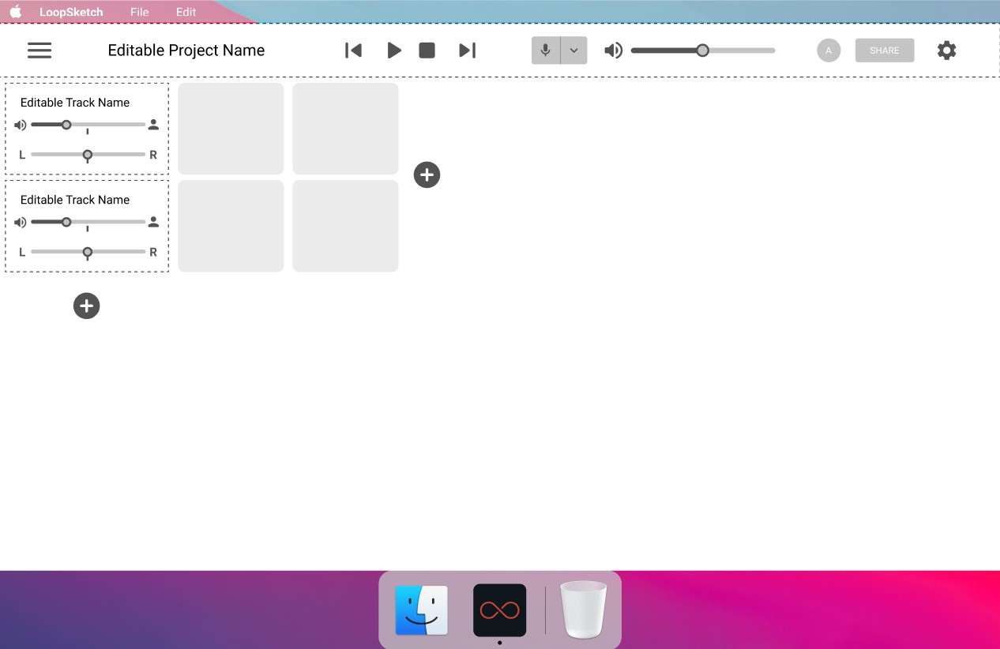
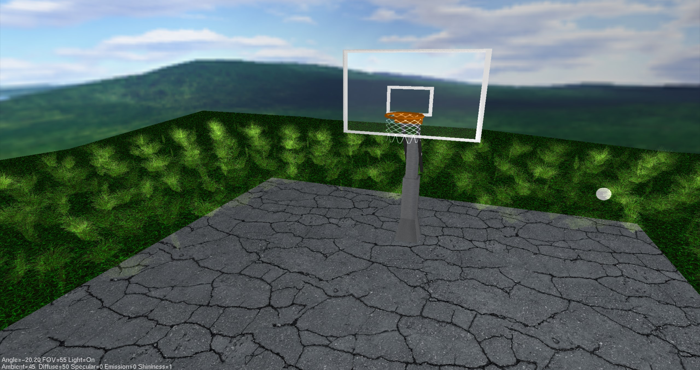
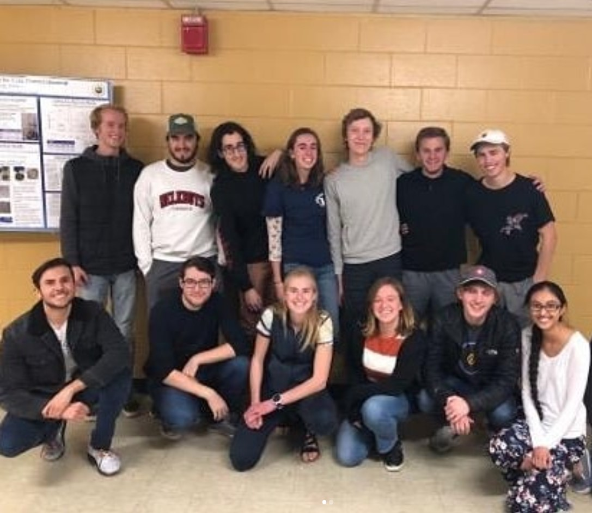
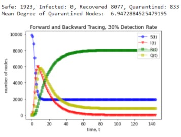
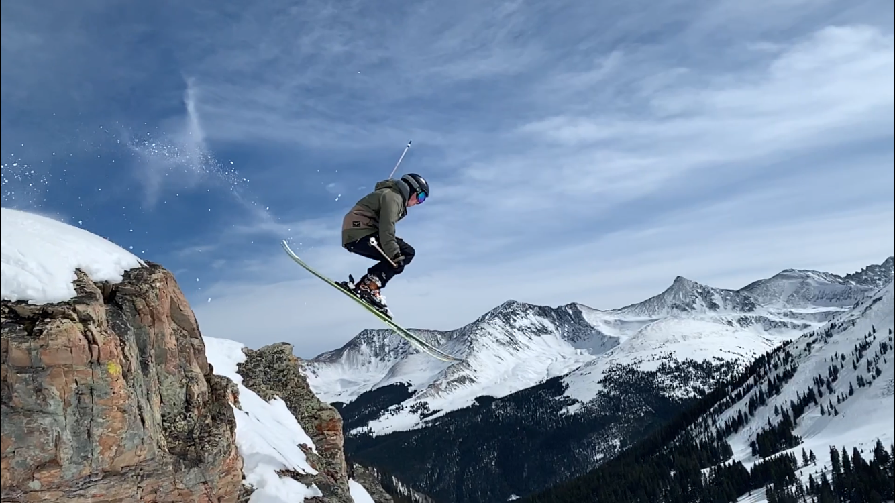
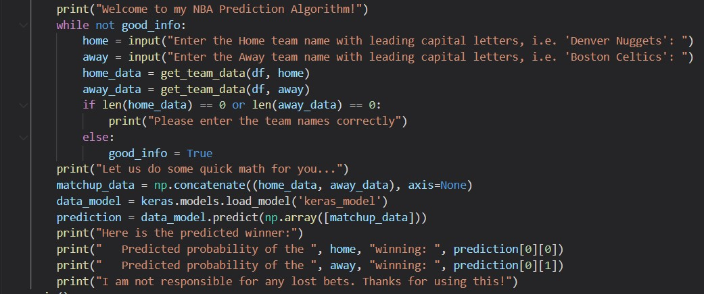

Hi, I'm Austin Ritz! I am a 2022 graduate from CU Boulder who majored in Computer Science. My interests include playing guitar, skiing, snowboarding,
soccer, basketball, coding, gaming, and many other things. I am a native to the Colorado area, and I love it here because of the natural beauty that Colorado has.
After my college career is finished, I hope to get a job doing Backend Software Development. I would love to do something related to gaming, data science, machine learning,
or anything else that is challenging and exciting. Below is a small taste of the projects that I have worked on while at CU Boulder and in my free time.

LoopSketch is a collaborative music making software.
It allows users to record sounds and share them with collaborators in real time.
I was on the backend team, responsible for the creating the audio manipulation software.
We achieved this using the Pyo library in Python.

Video Demonstration

Using C and OpenGL, I created this 3D scene of a basketball court in a field. All assets, besides the textures, were made by me.

I acted as the Design Team Co-Lead for the CU Engineers Without Borders Puerto Rico Team for one semester. During that time I interacted
on calls with industry professionals, and learned how to lead a team through small projects. I worked with QGIS software, and created a small program
to translate a list of GPS coordinates into accurate distances.

For a Biological Networks course, I created a network of several thousand inter-connected nodes that represented human social networks. Using this network,
I was able to simulate a virus's spread through a population, and test that spread using various methods of Contact Tracing. I felt a great interest in this subject
once the Covid-19 pandemic began, and I felt that my results had valuable information in them for slowing the spread of a virus.
Below is the report I made on the study.

As a personal project, I created a python bot that would secure me a reservation at the ski resort of my choice. This was when ski resorts required reservations
due to covid. The bot would follow a set of instructions on a webpage until several conditions were met, at which point it would reserve the specified date for me to ski on.
this was needed because some days were fully booked, and with this bot I could catch the open spot when someone would cancel their reservation. Above you can see a picture of me
skiing on one of those days!

Using the Tensorflow and Keras libraries, I created an NBA prediction algorithm that predicts the winner of any NBA contest with over 70%
accuracy. The algorithm scrapes over 50 parameters from the NBA stats database and inputs them into the model to get a predicted winner.
- Object Oriented Design
- Robotics
- Computer Graphics
- Software Development
- Data Science (Intro, Advanced, and Seminar Courses)
- Fundamentals of Human Computer Interactions
- Algorithms
- Databases
- Biological Networks
- Intro to Artificial Intelligence
- Senior Capstone